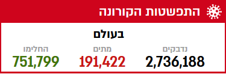
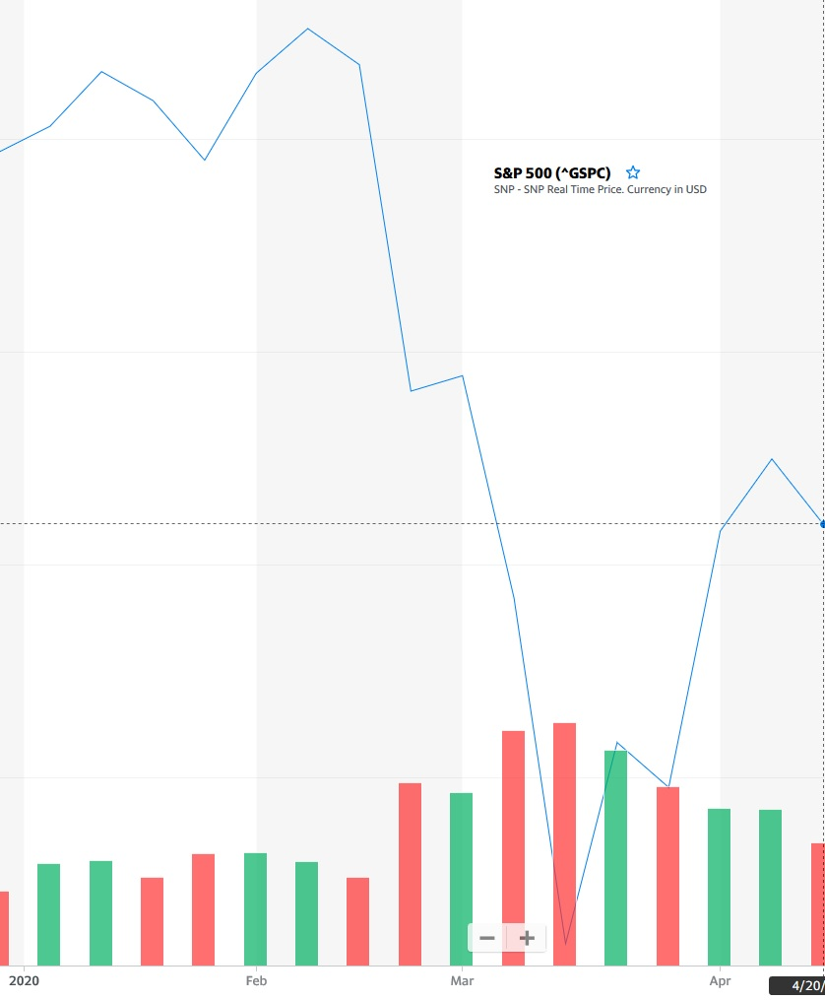
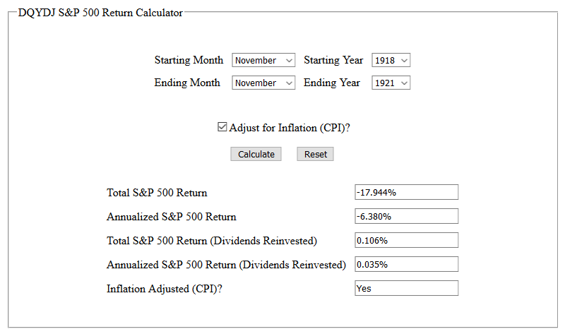

פורסם בתאריך 25.4.2020
התכנים בפוסט זה, כמו כל שאר התכנים בבלוג, הינם תכנים לימודיים במהותם, הם אינם מהווים ייעוץ או המלצה לביצוע פעולה בנייר ערך, ואין לראות בהם תחליף לייעוץ השקעות ו/או ייעוץ פנסיוני המתחשב בצרכיו הייחודיים של כל אדם.
משבר הקורונה גרם לירידות משמעותיות בשווקים מנק' השיא שלהם בפברואר 2020. מאז תחילת התפרצות המגיפה בעולם, אי הוודאות הכלכלית גבוהה ושוק ההון מתנהג בתנודתיות. אי הוודאות נובעת בין היתר מהעובדה שהמשבר הנוכחי מרגיש לנו שונה וחריג מאוד בהשוואה למשברים פיננסיים קודמים; בגלל שמעולם לא חווינו מגיפה במימדי התפרצות שכזו, אנחנו מוצאים את עצמנו נדהמים מכמות הנדבקים והנפטרים הגבוהה, והסגר והריחוק החברתי מרגישים לנו מאוד מוזרים ולא טבעיים.
אז נכון שמאפייני המשבר הנוכחי נראים לנו מוזרים וייחודיים, אבל לכל משבר יש מאפיינים ייחודיים משלו. בכל משבר יש הסברים, נימוקים ונראטיבים למה הפעם זה באמת משבר חמור במיוחד, נימוקים שעפ"י רוב מתבררים כמופרזים. לאף אחד אין באמת תשובה האם הרע ביותר כבר מאחורינו או שהשוק עומד בפני ירידות נוספות.
יתר על כן, העובדה שמעולם לא חווינו משהו דומה בימי חיינו לא אומרת שהתפרצות של מגיפה גלובלית זה משהו שלא קרה מעולם. אני מדבר כמובן על מגיפת השפעת הספרדית שהתרחשה לפני כמאה שנה. אז בואו ננסה להשוות בין שתי המגיפות, מבחינת השפעתן על הבריאות, הכלכלה העולמית והשווקים (הנתונים מוויקיפדיה).
מועד ההתפרצות
מגיפת הקורונה: סוף 2019 בואכה 2020 (מן הסתם המגיפה עדיין נוכחת, נכון למועד כתיבת שורות אלו).
השפעת הספרדית: שיא המגיפה נמשך כשנה, מאפריל 1918 עד אפריל 1919. לקראת תחילת 1920 דעכה המגיפה, עד שהוכחדה לחלוטין. ככל הנראה נוצרה חסינות עדר שמנעה מהמחלה להתפרץ מחדש.
מימדי המגיפות
מגיפת הקורונה: נכון ל-23.4.2020 נדבקו בווירוס כ-2.7 מיליון איש ברחבי העולם (מקרים מאומתים), ונפטרו ממנו כ-200,000 איש. אני בטוח שכולכם מזהים את הטבלה הזו, שמתעדכנת מדי יום בתקופה האחרונה (מקור: וואלה).

השפעת הספרדית: אם מימדי ההדבקה של וירוס הקורונה נראים לכם גבוהים, שימו לב לשפעת הספרדית. עפ"י מרבית ההערכות, נדבקו בשפעת הספרדית כ-500 מיליון בני אדם (מעל רבע מאוכלוסיית העולם באותה עת!), ומתו ממנה בין 20 ל-50 מיליון נפש.
תקראו שוב את הנתונים ותנו להם לשקוע רגע. מעל רבע(!) מאוכלוסיית העולם נדבקה בנגיף, ובין 4-10% מהנדבקים נפטרו ממנה! גם המספרים האבסולוטיים של עשרות מיליוני מתים פשוט מדהימים, ומתקרבים לכמות ההרוגים של מלחמת העולם השנייה. מדובר על בערך פי 100 עד פי 250 מכמות הנפטרים מהקורונה עד כה, וזה כאשר אוכלוסיית העולם גדולה פי ארבעה.
הנפגעים העיקריים מהמגיפה
מגיפת הקורונה: קבוצת הסיכון המרכזית לתחלואה ומוות היא בעיקר מבוגרים בני 65 ומעלה עם מחלות רקע. בגילאים הללו ההשתתפות בכוח העבודה נמוכה, ובהתאם התוצרת הכלכלית נמוכה. שכבת גיל זו, לא רק שאינה מייצרת כמעט תוצרת כלכלית, היא גם צורכת משאבים מכח האדם העובד כגון קצבאות זקנה ופנסיות ממשלתיות (בניגוד לפנסיות צוברות אישיות), וצריכה מוגברת של שירותים רפואיים. כמובן שהחיים הם מעל הכל, אבל אם נתייחס לעניין מבחינה כלכלית גרידא, פגיעת המגיפה בקבוצת גיל זו אינה מהווה פגיעה כלכלית.
השפעת הספרדית: המגיפה פגעה בעיקר בגברים בגילאי 20–40 והייתה יוצאת דופן בהשוואה למגפות אחרות בהם המתים היו בעיקר תינוקות, קשישים וחולים כרוניים. מדובר על החלק הארי של כח העבודה.
המצב הפוליטי והכלכלי בעולם לפני התפרצות המגיפה
מגיפת הקורונה: העולם מצוי ברובו במצב של שגשוג וצמיחה כלכלית, הרפואה מתקדמת, חידושים טכנולוגיים צצים כל הזמן, ושורר שלום עולמי באופן יחסי, עם מס' קטן יחסית של עימותים צבאיים מוגבלים במזרח התיכון ובאפריקה, וכן השפעה מוגבלת של משבר הפליטים כתוצאה ממלחמת האזרחים בסוריה.
השפעת הספרדית: המגיפה פרצה בשלהי מלחמת העולם הראשונה, כאשר הכוחות הכלכליים המרכזיים של העולם, ארה"ב ומערב אירופה, מצויים בשיאה של מלחמה עקובה מדם שגבתה את חייהם של יותר מ-16 מיליון איש, פגעה משמעותית בפעילות הכלכלית, וגרמה למיתון. שום מועד הוא לא מועד מוצלח להתפרצות מגיפה, אבל המועד הזה הוא כנראה אחד המועדים הגרועים ביותר שניתן היה לדמיין. למלחמה עצמה אמנם לא היה קשר ישיר להתפרצות המגיפה, אך נראה שהתנאים שנוצרו במלחמה, כגון המגורים הצפופים ותנועת הכוחות ההמונית, האיצו את התפשטותה.
חשוב לזכור שכוחות כלכליים צומחים ומשמעותיים בימינו, כמו סין, הודו, וחלקים ממזרח אסיה, מאפריקה, מהמזרח התיכון ומאמריקה הלטינית, היו שממה במונחים כלכליים לפני כמאה שנה. מדובר על מאות מיליונים שהיו רובם ככולם איכרים עניים, לא תרמו כמעט דבר להתפתחות הכלכלה העולמית ולא היו חלק מהמהפכה התעשייתית. דווקא מערב אירופה וארה"ב, האזורים הכמעט יחידים שיצרו ערך כלכלי לאנושות, היו הגורמים המרכזיים שהשתתפו במלחמה, ובמקביל נפגעו באופן משמעותי מהמגיפה. ההערכות מדברות על בין 500,000-675,000 נפטרים בארה"ב מהמגיפה, מס' דומה לכמות ההרוגים האמריקאים במלחמה. בבריטניה גבתה המחלה את חייהם של כ-200,000 איש (יחד עם כ-700,000 הרוגים במלחמה) ובצרפת יותר מ-400,000 איש נפטרו ממנה (יחד עם כ-1.3 מיליון הרוגים במלחמה). כתוספת על כל אלו, עלה חשש כבד במערב מעליית הקומוניזם.
מחיר הנפט*
מגיפת הקורונה: עוד לפני שיא ההתפרצות, רוסיה וסעודיה גרמו לייצור מוגבר של נפט כך שמחיר הנפט צנח ביותר מ-50%, עד שנסחר בפחות מ-$30 לחבית. הסגר וההקפאה הכמעט מוחלטת של התעופה והתיירות העולמית הקטינו את הביקושים לנפט, מה שהוריד את מחירו עוד יותר.
השפעת הספרדית: במהלך התפרצות המגיפה מחיר הנפט זינק ב-50% עקב ביקוש גובר לנפט עקב גידול בכמות הרכבים, בנוסף לחשש אמיתי מהתרוקנות מלאי הנפט העולמי. בדיעבד כמובן שחשש זה התפוגג כי נמצא עוד הרבה נפט בעולם, אבל בשעתו החשש היה אמיתי ומוחשי.
* מחיר נפט זול טוב מאוד לתעשייה ולכלכלה, ומחיר גבוה פוגע ביכולת הייצור. הדבר נכון במיוחד לתקופת השפעת הספרדית, כאשר הכלכלה נשענה באופן משמעותי על תעשייה מסורתית, בניגוד להיום שחלק ניכר מהתעשייה נשען על טכנולוגיה עילית.
סיכום המאפיינים הבריאותיים והכלכליים
מההשוואה שערכנו, ניתן לראות כי בכל הפרמטרים מגיפת השפעת הספרדית היתה חמורה יותר באופן משמעותי ממגיפת הקורונה, נכון למועד כתיבת שורות אלו. כמות הנדבקים והנפטרים מהשפעת הספרדית גבוהה בסדרי גודל, הנפגעים העיקריים היו צעירים שהיוו את עיקר כח העבודה (לעומת מבוגרים וחולים שכמעט ואינם משתתפים בכח העבודה), אין בכלל מה להשוות בין הרפואה של היום לזו של לפני מאה שנה (בפרט, לא היו אז מכונות הנשמה), המשק היה במיתון קשה ובשלהי מלחמת העולם הראשונה (לעומת משק במצב כלכלי טוב, שמצוי בשגשוג יחסי), ועם מחירי נפט גבוהים שפוגעים ביכולת ההתאוששות של המשק (לעומת מחירי נפט המצויים בשפל היסטורי, וללא כל חשש ממחסור).
ההשפעה על השווקים
מגיפת הקורונה: מנק' השיא בחודש פברואר השוק ירד בכ-32%. לאחר מכן תיקן השוק בחדות מעלה עם עלייה של 21%, כך שהירידה המצטברת מנק' השיא ועד ה-20.4.2020 עומדת על כ-17% (מקור: יאהו פייננס).

השפעת הספרדית: למזלנו הנתונים הסטטיסטיים של שוק ההון האמריקאי נגישים לנו החל מ-1871, וניתן לבחון אותם בתקופות שונות (ובצורה מדוייקת עם השקעה מחדש של הדיבידנדים והצמדה לאינפלציה) במחשבון המצוין הזה. אז שיחקתי קצת עם המחשבון ומצאתי שהתקופה הגרועה ביותר מאז התפרצות המגיפה היתה בין נובמבר 1918 לדצמבר 1920.
ניתן לראות כי למרות פרמטרים כלכליים ובריאותיים גרועים במיוחד בכל הנוגע לשפעת הספרדית, ההשפעה על שוק המניות האמריקאי לא היתה דרמטית וכללה ירידה ריאלית של כ-19% בלבד (הנתון החשוב מופיע בשורה השלישית – התשואה עם השקעה מחדש של דיבידנדים). מדובר בירידה דומה לירידה בשווקים כתוצאה ממשבר הקורונה נכון למועד כתיבת שורות אלה.
שנה לאחר מכן, בנובמבר 1921, 3 שנים מנק' השיא, ההתאוששות כבר הושלמה לחלוטין:

מה ניתן להסיק מההשוואה?
בגדול, שום דבר, כי הנבואה ניתנה לשוטים. אבל אני חושב שההשוואה קצת מכניסה אותנו לפרופורציות, ונותנת מקום לאופטימיות, שאולי מסבירה גם את התיקון החלקי בשווקים. מימדי התחלואה והתמותה של מגיפה הקורונה, נכון למועד כתיבת שורות אלה, הם כאין וכאפס לעומת מימדי התחלואה והתמותה מהשפעת הספרדית, הנפגעים העיקריים שונים לחלוטין, המצב הכלכלי והפוליטי בעולם טוב עשרות מונים, אין בכלל מה להשוות את מצב הרפואה והטכנולוגיה לעומת לפני מאה שנה, וזרימת המידע, הסחר, ושיתופי הפעולה הבינלאומיים הם הרבה יותר מפותחים מהעולם המסוכסך של לפני מאה שנה. אין לי שמץ של מושג לגבי עתיד הכלכלה והשווקים בטווח הקצר, אבל אני סמוך ובטוח שהכלכלה העולמית תתאושש מהמגיפה ותמשיך לצמוח, כפי שעשתה ב-150 השנים האחרונות. משברים כלכליים, מלחמות עולמות ומגיפות פגעו כמובן בשווקים, אבל ההתאוששות תמיד הגיעה והכיוון לטווח הארוך הוא תמיד למעלה, עם התקדמות הצמיחה הכלכלית בעולם.
אז מה כדאי לעשות? אני דוגל בגישה שלא משנים תכניות אסטרטגיות בגלל תנאי השוק, ולכן חשוב לא לשנות תמהיל השקעה ולהמשיך להשקיע בעקביות באופן אוטומטי, במיוחד אחרי ירידות בשווקים. רוצים ללמוד איך לתכנן ולהוציא לפועל תכנית השקעות בהתאם ליעדים ולמטרות שלכם – לטווח קצר, לטווח ארוך ואפילו לחיסכון הפנסיוני, מבלי לחשוש מתנאי השוק המשתנים? קורס החירות הפיננסית הוא הפתרון עבורכם.
בריאות טובה ופרנסה טובה לכולם!
רוצה לשאול שאלות ולהשתתף בדיון? את/ה מוזמן/ת לפוסט בעמוד הפייסבוק שלנו.
רוצה לקבל סוף כל סוף את כל הכלים והידע הפרקטי כדי להשקיע בקלות וביעילות את כספיך וחסכונותיך? לחץ/י כאן כדי לראות את שירותי ההדרכה והסיוע במימוש השקעות פאסיביות שאנחנו מציעים.

{kind=link}